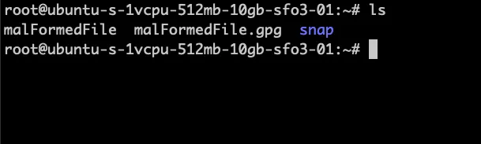
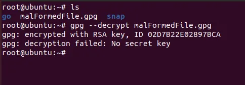
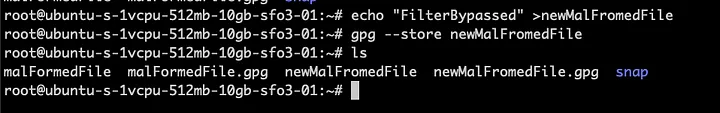
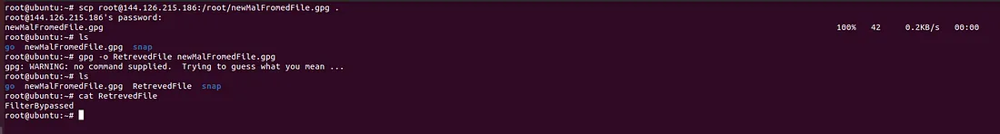

GPG Bypass
I'll describe a GPG bypass technique I discovered during a penetration test and show how I used it to bypass a filter and gain code execution.
What is GPG?
GPG (GNU Privacy Guard) is a replacement for PGP. It's a software binary that supports encrypting files using both symmetric and asymmetric cryptography.
How GPG works
GPG uses public-key encryption. You generate GPG keys with the gpg binary and use those keys to encrypt files. You share the public key so others can verify the file and keep the private key to decrypt it.
Example

As you can see, we generated GPG keys and used them to encrypt and decrypt files as described above.
How the decryption works
Once you receive an encrypted file, you can use the gpg binary to decrypt it like this:


The question is: how is GPG being used as a filter?
Think of a software upgrade feature. For example, an application like OpManager (Zoho) may support upgrades that come as a bundle file.
- Download the upgrade pack
- SSH into the box
- Run the OpManager upgrade script and pass the upgrade file location
- Some applications even allow uploads of the upgrade bundle via the web UI
The application asks for an upgrade bundle and either downloads necessary files from an upgrade server and overwrites files, or the bundle itself contains the files to overwrite.
Such upgrade functionality can be exploited for Arbitrary File Write (AFW) if proper checks are not in place.
To defend against this, applications often accept an encrypted bundle. The keys to decrypt that bundle are either present on the filesystem or downloaded on demand, and are usually instance-specific.
Check out the code below

If you inspect the code above, it uses the gpg binary to verify and decrypt the file.
You might notice there is no --decrypt flag specified — so how does it decrypt?
Good catch, but not enough. When you pass an encrypted file to gpg, even if you don't supply --decrypt, GPG will try to guess the intended operation. Since you typically won't have the required keys on that system, the decryption normally fails.
Look at what happens when you run the command on a terminal:

The first line says: No command supplied, trying to guess what you mean...
That means if you can fool GPG into thinking the file is not an encrypted message but a normal GPG-storable file, GPG will “recover” the embedded data and output the original file — which the upgrade process will then use.
The --store flag
While reading the gpg man page I found the --store flag, which creates a valid GPG file but does not involve any keys.
If I craft the bundle to include a stored (not-encrypted) GPG object and pass it to the application, the filter gets satisfied and the bundle is accepted — allowing my files to overwrite files on the filesystem.
To demonstrate, I spawned a VM, created an encrypted file there, and tried to decrypt it on the target VM.


As you can see, the file failed verification because the keys were different.
Now let's apply the trick:


The file is verified and the underlying text file is recovered and saved to the location we specified.

Using this technique, I can craft a bundle that results in Arbitrary File Write and therefore lead to RCE. There are many ways to achieve RCE from AFW: overwrite cron jobs, replace application binaries, drop web shells in the webroot, or overwrite scripts that are later executed by APIs or scheduled tasks.
Note: This technique is not limited to software upgrades — it can apply to backup restores and other flows. If AFW is not achievable, consider trying for file disclosure via symlink attacks.
That's it for today. Thanks for reading — happy hacking.
Connect with me: